Dal banco,
ogni mattina.
Pasticceria con torrefazione in via Bidone, a Voghera. Croissant sfornati ogni mattina, torte fatte su misura e caffè tostato in bottega.
-
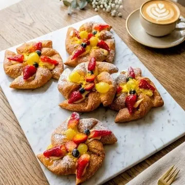
Croissant alla frutta frescaIn vetrina
-
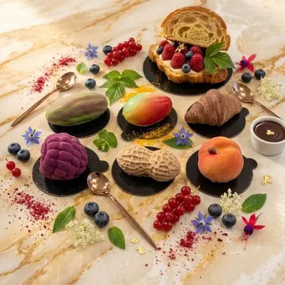
Frutta realisticaIn vetrina
-
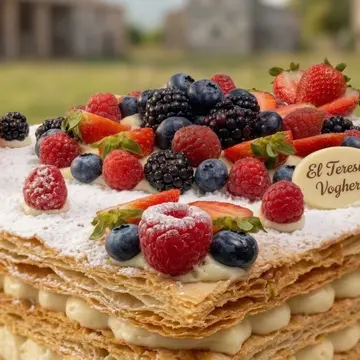
Millefoglie ai frutti di bosco, 100% vegetaleIn vetrina
-
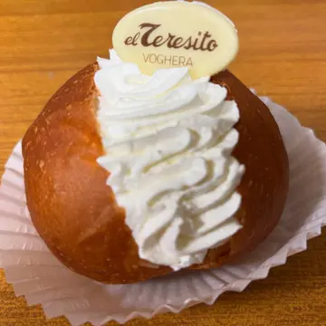
MaritozzoIn vetrina
-
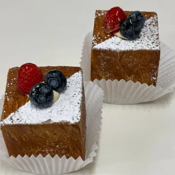
Cubo chantilly e fruttaIn vetrina
-
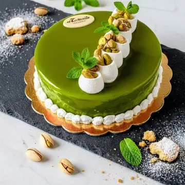
Chantilly e pistacchioSu ordinazione
-
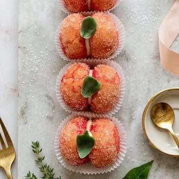
Pesche dolciIn vetrina
-
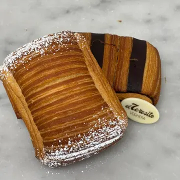
Saccottino crema e cioccolatoIn vetrina
-
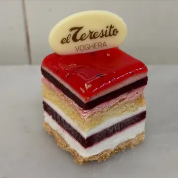
Chantilly, lamponi e frutti di boscoIn vetrina
-
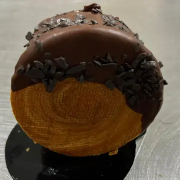
NY rollIn vetrina
-
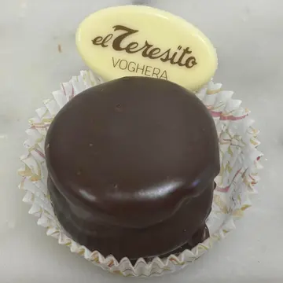
Moretto al cioccolato e rumIn vetrina
-
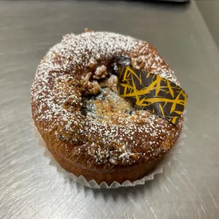
La Sissi, lievitato ai mirtilliIn vetrina
-
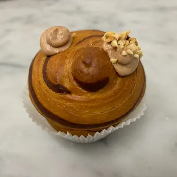
Croffin al creminoIn vetrina
-
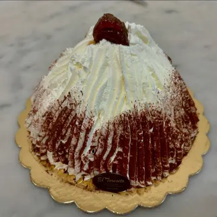
Monte BiancoDi stagione
-
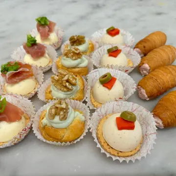
Pasticceria salataSu ordinazione
Trascina i ripiani: il banco cambia ogni giorno, per sapere cosa c’è oggi basta un messaggio.
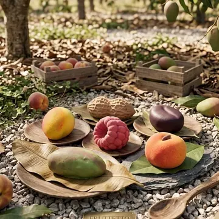
Sembra frutta.
È pasticceria.
Un guscio sottile e croccante che racchiude mousse leggere e inserti di frutta. L’occhio ci casca, il palato ringrazia.
- Pesca
- Limone
- Arachide
- Lampone
- Mandarino
- Baccello di vaniglia
Escono in quantità limitata e finiscono in fretta: quando tornano lo scriviamo su Instagram.
Chiedi cosa c’è oggiLa tua torta,
scritta a mano.
Compleanni, diciottesimi, lauree, battesimi, matrimoni. Ci dici per quanti siete e che gusto vi piace: al resto pensiamo noi, scritta compresa.
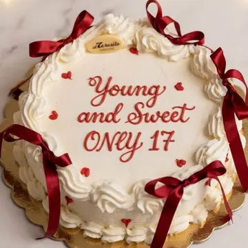
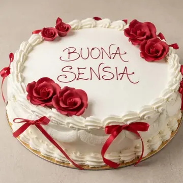
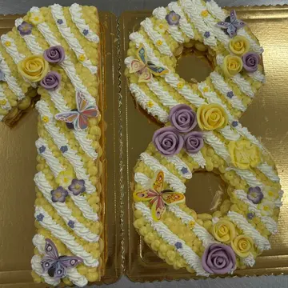
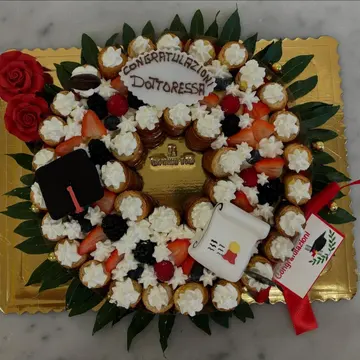
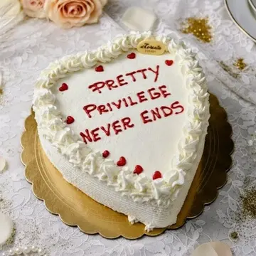
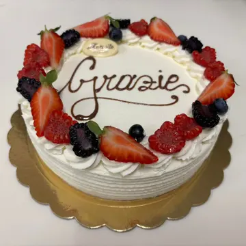
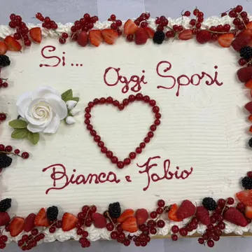
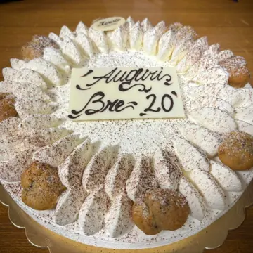
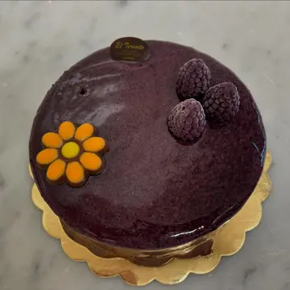
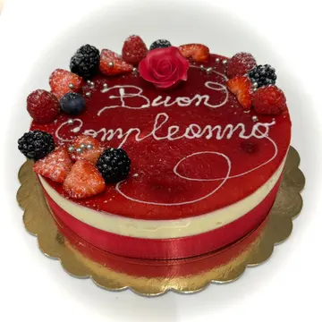
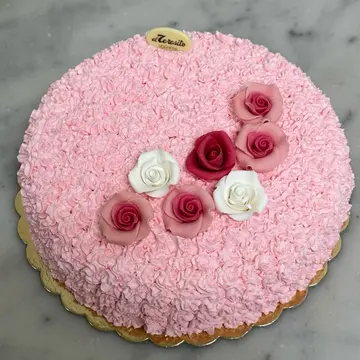
I dolci che portano
il nome di Voghera.
-
Teresina di Voghera
Il lievitato che porta il nome della città. La trovi confezionata in tre versioni: Nuvola, ai canditi di albicocca e ai frutti di bosco.
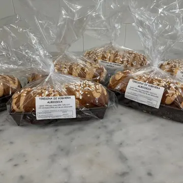
-
Perla di Voghera
Una torta moderna ispirata al bacio di dama, nata dopo la Zuppa di Voghera.
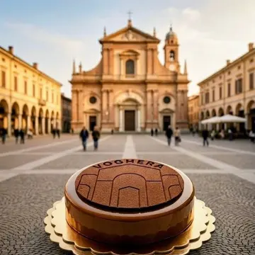
-
Zuppa di Voghera
La torta tradizionale della città.
-
Palle di Voghera
Il dolcetto della Sensia, con le farciture classiche.
-
La torta del Giro
Una maglia rosa da mangiare, portata alla cena della tappa di Voghera del Giro d’Italia.
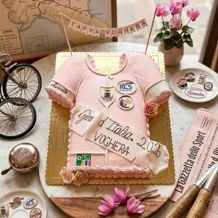
Prima di tutto,
una torrefazione.
El Teresito nasce negli anni ’50 come torrefazione, nel centro di Voghera. La pasticceria è arrivata dopo, ma il caffè è rimasto dov’era: lo tostiamo ancora noi, in bottega.
- Importiamo
- Scegliamo caffè da diverse parti del mondo.
- Tostiamo
- La tostatura la facciamo noi, nel nostro locale.
- Degustiamo
- Al banco, in tazzina. Oppure a casa tua.
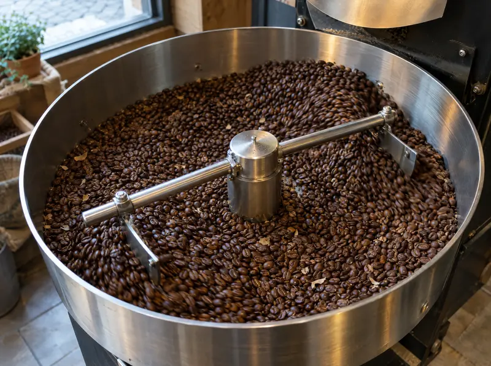
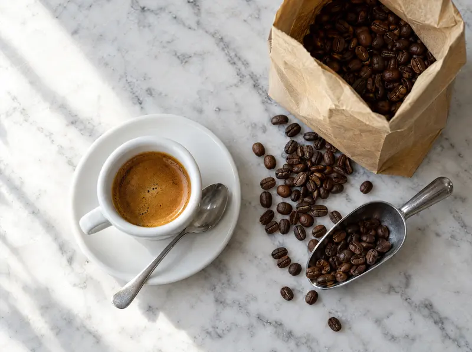
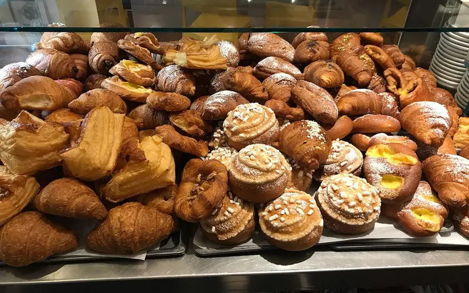
Una montagna di brioche,
dalle sette.
I croissant si preparano il giorno prima, per la lievitazione. La mattina il banco è pieno, a mezzogiorno molto meno.
- Brioche classiche
- Veneziane
- Olandesine
- Cubi
- NY roll
- Croffin
- Saccottini
- Maritozzi
- La Sissi
- La Brigitte
C’è anche chi non mangia latte e uova: la millefoglie ai frutti di bosco e la crostata con crema, cioccolato e frutta sono 100% vegetali. Per allergie e intolleranze chiedi sempre al banco.
L’anno, visto
dal laboratorio.
Ogni festa ha il suo dolce, e quasi tutti vanno prenotati per tempo.
-
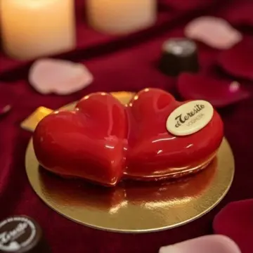
Febbraio
San Valentino
Cuori glassati, monoporzioni e astucci di biscotti.
-
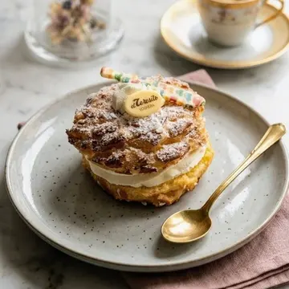
Marzo
Zeppole e mimosa
Le zeppole di San Giuseppe e la mimosa per l’8 marzo.
-
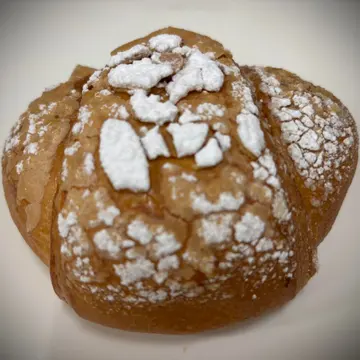
Pasqua
Colombe e uova
Colombe, uova di cioccolato e torte di primavera.
-
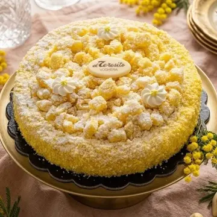
Maggio
Mamma e Sensia
Le torte per la festa della mamma e i dolci della fiera di Voghera.
-
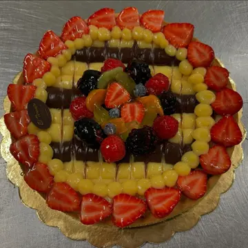
Estate
Frutta e crostate
Crostate di crema e frutta fresca, croissant alla frutta.
-
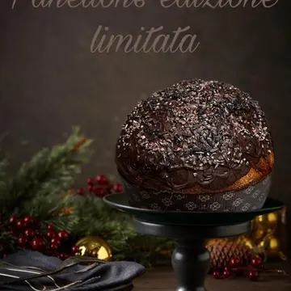
Dicembre
Panettoni e lievitati
Panettone in edizione numerata, panettone gastronomico, brioche da dividere e il lievitato in vasocottura.
Ogni tanto usciamo
dal laboratorio.
- OltreGusto 2026
- Abbiamo firmato il dessert di fine serata, chantilly e frutti di bosco, all’Istituto Gallini.
- Giro d’Italia
- La torta per la cena della tappa di Voghera, e un’intervista andata in onda su RaiPlay.
- Masterclass in Enaip
- «Rivoluzione dolciaria», un pomeriggio di pasticceria con gli studenti, con il patrocinio del Comune di Voghera.
- 50 sfumature di Pinot Noir
- La Teresina al Provolone Valpadana DOP, presentata con il consorzio.
| Martedì | 07:00–12:30 · 15:00–19:00 |
|---|---|
| Mercoledì | 07:00–12:30 · 15:00–19:00 |
| Giovedì | 07:00–12:30 · 15:00–19:00 |
| Venerdì | 07:00–12:30 · 15:00–19:00 |
| Sabato | 07:00–12:30 · 15:00–19:00 |
| Domenica | 08:00–12:30 |
| Lunedì | Chiuso |
In agosto e nei giorni di festa gli orari cambiano: li pubblichiamo su Instagram e Facebook.